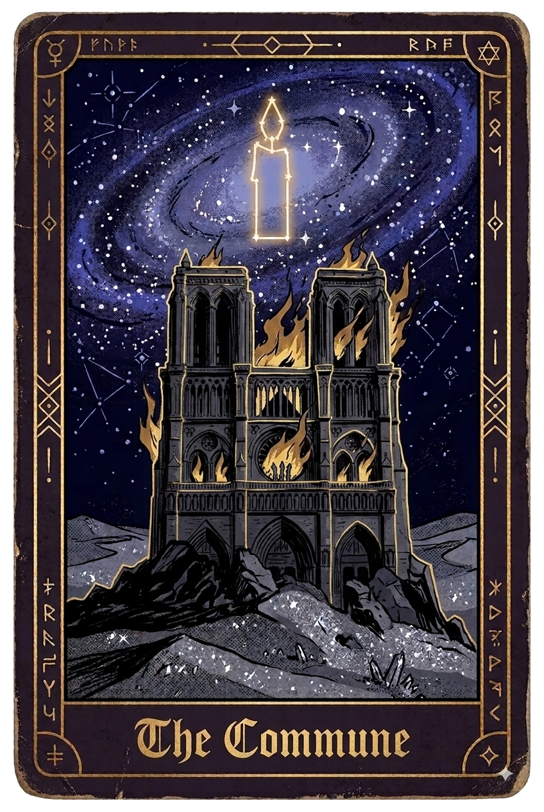

Void - III - The Commune Selph and Momos walked the desert. The galaxies above their heads swirled around like oil in water. They had eaten through their provisions. Momos had finished-off his in the first few minutes since they had set out, whereas Selph portioned his over the journey. Not that food was vital in this place, but at the very least it broke up the monotony of the walk. Selph still shared his portion with Momos. Selph had been leading them, following his invisible pull to some distant location, but it had since faded, and now he found himself just tracing the last direction he had felt it pulling towards. He would occasionally fiddle with the card he had been given, looking over its illustration of the tower with the star sign in an attempt to find clues. Not that there were any to find. "Thought you knew where you were going…" Momos said whilst childishly kicking up some sand. "I thought I did, but I don't anymore, not sure what I'm missing." Momos clicked. "You need some meaning!" He said as though meaning itself was a good you could purchase. Selph stopped and looked at Momos, one eyebrow raised. "Yeah, we can go find you some meaning," Momos said with a shrug. "Okay… how would we do that?" "We can ask God, or a god, whichever really," he replied casually. "How?" "The commune is probably the best place, the people there love all the gods, we can go talk to them, then get you some meaning." "Okay… how do we get to this commune?" "You just have to want it," Momos said, his voice taking on a near serious tone. Before Selph could follow with a question, the sound of bells could be heard from behind him. Turning, Selph could now see a gigantic cathedral. Selph felt something in his pocket and took out the card he had. It now bore an illustration of the cathedral in front of him. "Hah. Glad to see someone else agrees too!" Momos said. From the cathedral, lights and inhabitants from the hundreds of windows could be seen. Each of its towers had its own unique theme; it was similar to the Tower in its segmented design, but it appeared more tasteful. Yet, just like the Tower, the real cathedral differed from the one on Selph's card. The illustration showed it engulfed in flames, smoke billowing from its windows, whereas the one before him stood pristine and peaceful. Just like the tower, lines and lines of people headed through the entrances, the lines consisting of distinct groups. What differed was the mood, where the tower attracted rambunctious crowds that hollered and roared, the people entering the commune were humming and singing at most, with the majority walking in silence. "Let's go talk to a god!" Momos said as he excitedly led the way. They soon found themselves merging into the line. Again it was a familiar sight — demons and shadows wore similar-looking masks whilst being dressed in similar outfits and carried banners with their symbols and flags. Yet instead of a boisterous celebration, he was surrounded by a quieter reverence. Ahead of him a group of grey-dressed travelers swung smoky metallic containers as they chanted unknown words, and behind him a group all wearing red-feathered hats walked with their eyes closed and marched in unison as their apparent leader banged a drum every few steps. "I forget how stuffy these guys are, I'm second-guessing if we are actually going to find any fun here, maybe we should bounce?" Momos said to Selph with a comically loud whisper. "You said we were coming here to find some meaning?" "Oh yeah, meaning, there's plenty of that here," he replied, his enthusiasm clearly dwindling as he looked across the solemn travelers. Eventually they walked through the great doors. They were met by greeters standing around the entrance, but they didn't have anything thrown at them; instead they were met with simple smiles. Overhead, large dark metal bells were rung in slow rhythmic chimes. Selph was awestruck when stepping through — it was a gigantic hall, lined with hundreds of banners and lit by large stained-glass windows from all sides. Throughout the hall the groups had set up various camps, some consisting of rich tents and others just pillows in a circle. They were met by woody and spicy aromas of incense that emanated around the great hall, the smoke creating a misty layer that hung above everything. Along the walls sat large doors that presumably led up and into the various towers. Despite the huge amount of people and activity, there were no raised voices, no arguments or conflicts. Priests delivered sermons, circles sat in concentrated meditation, individuals burnt offerings, and many sat in quiet prayer. Selph turned to find Momos and found him stuffing his face with wafers, to the discomfort of the ones offering them out. "Momos, where do we start?" Selph asked. "Oh right… yeah let's go talk to… oh those guys look fun!" Momos said whilst spitting out wafer. The group he had pointed to was dressed in blue robes and were currently balancing on their heads. They approached the group and watched. A white-haired demon sat at the top of their area with a large book covered in tiny script. Next to him sat a large timepiece, its sands coming to a finish. "Now make the sign of the fallen!" The old man called out, to which all of his followers moved to sit, raising an arm into the sky. "Dereliction, the first sin," his followers all said in unison. The old man then turned the large timepiece, the sands resetting and flowing down again. Selph and Momos approached further. "Welcome! By their grace, by their grace, by their grace," the old man said to them, flicking a small metal bottle of water three times. "Do you mind if I ask what you guys are doing?" Selph said. "Worshipping! We're worshipping our God of Regimen, this is how you talk to the divine," he said with great enthusiasm whilst simultaneously reading his large book. "Sorry, are we interrupting?" "Not at all, this is how we live at every minute, entirely in worship, in accordance with the holy texts." The timepiece came to another end. "Now make the sign of the forgiver!" The old demon called out, as he reset the timer. The followers stood and hugged themselves. "Forgiveness given in commitment," they all then said. "Do you not do anything else?" Selph asked. "Doing anything else is selfish indulgence. You do not live for the self, you live for the divine and that must be demonstrated," the old demon said with a smile behind his mask, looking up from his book to meet their eyes. "Not really living then is it?" Momos whispered loudly in Selph's ear, saying what Selph was thinking out loud. "You must understand, we were made to worship and hence we must worship as much as we physically can," the old demon continued, his polite tone unphased. "But we were made to eat and sleep among other activities, or at least we used to have to do those things, regardless,the demand of continual worship can never fully be met, no?" "The wants of the body are weighed, it's the remaining time that must be given over in worship." Selph thought on Momos' blunt but apt comment, if Selph were to dedicate all his time to this god, he would have no time to live out any other meaning. There was a simplicity to it though. Living entirely by the predefined contents of a book, surrendering uncertainty in favour of continual worship. It was strangely comforting. Tempting, even. Selph could understand its allure, but he knew he wouldn't be able to follow it. Selph thanked the demon for his time before leaving. "Safe travels friends. By their grace, by their grace, by their grace!" The demon said, flicking the water three more times as they left. They navigated themselves through the crowds until the appearance of a stick-thin demon apparently meditating took Selph's interest. Upon closer inspection, he was more than stick-thin — he was more bone than anything, both him and his acolytes that sat around him. His mask also had a gaunt face etched into it with his eyes closed. "Welcome, do you wish to join us?" he said, his voice slow and soothing. "I wanted to ask if you could help me in discovering a meaning for myself" Selph said. "Of course," he replied, not moving an inch from his meditative position. "We can show you how, please come and sit." The two sat down. "The path to divine meaning is discovered through abstinence. You must reject all desires and pleasures. Then and only then will the Emancipated God talk to you." Momos scoffed. "Alright that's enough for me, I can see they're offering out wine over there, shout when you're done Selph," Momos said as he got up and left. Selph turned back to the yogi. Selph thought of the tower and the many pleasures it offered. He remembered how easily he had been caught up in it all, and how especially difficult it was to break away from it. He remembered that they felt ultimately misleading, like a sticky sweet trap. This Yogi seemed to have something here. "Not everyone can cut themselves from it, it's a difficult task that requires discipline and it's in this discipline that you are rewarded," the demon continued. Selph looked over their emaciated bodies. "Doesn't this kind of abstinence bring about suffering?" Selph asked. "Yes, but in that suffering, you prove your commitment through mind, body and spirit." "Why would a god actively want you to suffer before talking to you?" Selph asked. Some of the followers began to open their eyes and listen to the discussion. "Faith," the demon responded. "But why suffer for the sake of suffering? That seems almost vindictive," Selph continued. The followers now expectantly turned to the Yogi. "It isn't for the sake of suffering, it's to uncloud your perception and prove your commitment," the demon said, keeping an entirely neutral tone. Selph agreed with this, he had experienced it for himself, but something didn't sit right with him. It irked him, he twinged as he internally debated whether or not to drop the conversation, but somehow it felt… dishonest? "But if indulgence is the default way of the world, how could anyone first discover this form of communication with your god? How do you know this is the way, and how can you so confidently tell others so?" he said. The Yogi resumed his meditation in silence. Selph felt he had outstayed his welcome, so he moved on to find Momos. It didn't take long to find him. He was causing a bit of a scene as he was necking back bottles and bottles of wine. The small helpers that were handing out the bottles seemed too embarrassed to say anything. "Hey Selph! Now this looks more like it!" Momos said, his words now beginning to slur. "They even have some fires going!" They did have fires going, but they weren't campfires, they were full-on blazing pyres. The members dressed in burnt orange were carrying things and throwing them into the fire. They were taking the wine, food and even effigies and tossing them into the roaring flames. Selph approached a decorated individual who he assumed would have been a priest. He watched as a richly dressed demon had servants pour buckets of riches into the fire, the demon laughed and bowed to the crowds. He then watched a small plainly dressed shadow hold a necklace close to their heart, clearly not wanting to part. A decorated individual with a large hat firmly managed to get the shadow to throw the belonging into the fire. Selph approached and sheepishly asked "Excuse me, what is happening here?". "Sacrifices! Our God of Gratitude wants you to demonstrate sacrifice, that's how you will build your relationship with them. You must take something of value in your life and give it up willingly." "Here, take this, throw it in and offer it up!" he said, passing Selph an animal effigy and gesturing towards the fire. Selph raised an eyebrow as he inspected the carved animal in his hand. "Why an effigy?" Selph asked. The priest almost seemed embarrassed. "Well, using living sacrifices didn't go down well with the others here, and honestly it didn't scale well." "So your God accepts substitutes, how does that work? Doesn't it defeat the point?" Selph continued. "Sacrifice is parting with something precious; the effigy represents a precious life being offered up, and that is what gains you favour." Other inquisitive shadows had gathered to listen to their discussion. "But what is actually being sacrificed? And even if the animal were alive, isn't it the animal itself that's making the biggest sacrifice?" "It's the symbolism behind the gesture," the priest retorted. "A pretty empty gesture if you ask me," Momos drunkenly interjected. "But if it's just symbolism, then why doesn't your god just accept the thought of sacrifice alone?" "Because sacrifice that costs nothing has no value." "If your god specifically demands a material sacrifice then doesn't that just mean whoever owns the most material to give has the most favour? Doesn't that seem strange?" Selph snapped, surprised at this anger that apparently bubbled out of nowhere. Now some curious neighbouring group members also began to join the shadows that had crowded around. The priest's head turned between Selph, Momos and the gathered crowd. The priest then snatched the effigy back. "If you fail to understand the nature of sacrifice you will not have our God's embrace, now make way for true believers!" he said whilst urging them to leave. This gave Selph a flash, a memory of a church, tiny in comparison to the commune. It invoked a feeling of authority, not comfort. Was that where his anger came from he wondered. The two of them left, not before Momos snatched one more bottle of wine. "Wasting good wine is a sin, I say." Selph looked back towards the sound of raised voices, the neighbouring groups were now arguing with the Sacrificers. Back into the crowds they walked. The groups were many and their practices all varied; he watched one group bloodletting into a bowl, another burning symbols onto their skin and another inserting needles into themselves. Between the screams of the religious practices, Selph thought he could feel the air in the great hall become thicker with tension among the groups. "Come, come to the Guilt-eaters, come and dissolve your guilt in the face of God!" a voice cried out. A small demon dressed in black with a smudgy black heart drawn on her chest stood upon a pillar and called out loudly to the crowds. "Did something you regret, thought bad thoughts or committed an unforgivable act? All guilty are welcome — expunge your guilt and be provided guidance!" she continued. She sounded as though she were selling something at a market, but as crass as it seemed, something resonated in Selph. A pang, a memory without image, just a feeling. He had deep guilt in his stomach. It felt like a rock in a small pond. Momos saw Selph's fixation. "Hey Selph, even though this place looks like a hoot, I'm gonna go wander about," he said before he vanished. "You too, huh?" said a little voice. Selph turned to his side and saw a small feminine shadow. Selph stuttered as he contemplated denying that he knew what she meant. "...yeah, and I don't even know why," he confessed. "I can remember mine, in fact it's the only thing I remember," she said as she twisted uncomfortably, fiddling with her hair. "Do you think they'll be able to help?" Selph asked. "One way to find out," she said as she stepped up to the group. They were led by a larger shadow who wore a half-mask with the expression of crying eyes. He told them of the necessity of guilt, that it was divine suffering meant to be absorbed, to bring them closer to their God of Contrition. The tool to aid in expunging the guilt had a handle and multiple sharp dangling heads. The leader walked Selph through the technique: to start by breathing and then summoning the memory of his guilt. Something stirred. That same rock in the pond was present, but it started to take a new form, there were other people there, people that relied on Selph. He had failed them. This was the first time he had pulled a memory on command. Unfortunately he didn't know what or why; the memory then seemed to get stuck, not revealing anything further. At the leader's command, the whips fell. Whips cracked. Blood poured. Selph was met with sharp stinging pain that lined down his back. The memory didn't surface any further. He continued. The guilt remained. He continued. The guilt still remained. He continued. Then something began to turn inside him. Selph slipped into an inky-black world as his memory began to surface, the people he had failed. Then there was something else, something now with him, a presence. Selph was now floating in a void and the other thing with him was now just watching. From all around. It felt naked, everything about him was on display. It then drew close. It tasted him. It wanted something, it wanted his pain, his suffering. Selph was more than happy to offer it up. Then it wanted more; it wanted the memory itself. He could feel the faint memory of disappointing others now begin to fade. Selph tried to hold onto it. He tried to resist, to escape, but he found himself stuck in this thick darkness. It kept him there. "Give it to me," came an ethereal voice. He thrashed with his mind or his spirit, with whatever it was he thrashed, but it didn't give. Then he was snapped back into reality to the sound of commotion. "No, I can't — no more!" a small voice next to him declared. It was the shadow he had spoken to. Selph saw her standing back up, back bloodied, dropping her whip to the floor. The other followers had now also stopped, looking at her. Seeing this, the leader hopped down and took up the whip. "You need encouragement!" He shouted as he thrashed the little shadow. Selph found himself instinctively stepping up, snatching the whip and pushing the leader to the ground. "No!" he shouted. The followers were stunned, but then one of the larger demons stepped through them brandishing a large spike-studded stick and began to approach Selph, as other masked shadows began to close around. "Enough!" cried a voice, as a group of various shadows and demons intervened, stepping to the defence of Selph and the smaller shadow. There was a stand-off as the two sides puffed their chests and squared up, each of them gripping their heavy religious instruments. Selph and the small shadow were able to back away and rejoin the general area. He heard the arguments behind him begin to escalate, but he didn't stay to see if it got physical. "Are you okay?" Selph asked. "Yes, thank you…" she said whilst fiddling with her hair. "I don't think this place is for me. It was nice to meet you. I hope you find what you're looking for," she said, before parting and beginning to leave. He considered joining her, maybe she was looking for the same thing he was. He didn't though; he just watched her vanish among the crowd. "Me too," Selph said after a pause. The Guilt-eaters seemed no different to the group that self-abstained, it was all still bodily punishment. Selph decided that he didn't want to receive meaning from a god that sought his suffering in any form, especially not one that wanted to take his memory. Something had nearly stolen one of the few things he had. What was it? Was it really a god? Is that what this place truly offered, hungry gods looking to feed on the vulnerable? If so, they seemed more like scavengers than gods. Momos had been watching towards the end. He saw the two shadows converse before parting, and saw the bleak expression on Selph's face. He watched him a few moments longer in contemplative silence before finally approaching. "Oooh, found yourself a girlfriend, Selph!" He said in a jovial voice. Momos stood over Selph, eating decorative buns. "Any luck finding meaning yet?" he said like a child asking about the length of a journey. "No, honestly it's not going particularly well. Have you found anything interesting?" Selph replied. "Prayer breads," he said, as he shoved another bun into his face. "I wonder how many I need to eat to have a word with God?" he said with a chuckle. Selph and Momos found a balcony to sit and watch the crowds from. Selph slumped, head in hand, as he watched the many different sects conduct their strange rituals and prayers. He wasn't sure how many more of them he would have to investigate before he would find a god that could give him a meaning. "You know what's so funny about these lot, they're all so cocksure their answer is right," Momos said. "Which is silly, because everyone knows I have the right answer!" he said with a theatrical flourish of his hands. Selph didn't laugh. As Selph sat in silence, something among the crowds began to stir. The groups that had initially kept to themselves started to mingle. As they mingled, voices were raised and physical altercations could be seen here and there. "Uh oh… I forgot about this," Momos said. "What's happening?" Selph asked. "It's going to become messy, incredibly fast," he said. "Why?" "Well it was always going to happen, but I feel we may have had a little hand in speeding up the process," he said with a smile beneath his mask. As Momos said that, Selph saw one follower pulling a large blade and attacking another from a neighbouring group. Momos evaluated the exit routes and decided something more drastic would be necessary. "Hey Selph, hop on my back," he said as he turned around and gestured to his back. Selph hesitated but then saw the violence escalating like a fire beginning to fully catch, and found himself jumping onto Momos' back. Momos then leapt from the balcony and began to swing across each of the large banners, flying through the air as he threw himself forward. Selph watched the chaos below, the burning pyre had now spread into a hungry blaze. Most of the believers had now taken up swords and other instruments of pain as they hacked and stabbed each other. The woody incense was now replaced with black smoke as the fires began to consume prayer mats, idols, altars and believers alike. Momos landed at one of the doors with a theatrical finish, his last twist nearly throwing Selph off his back. Momos performed a mock bow before the two of them ran out of the door, weaving through the bloody skirmish. A hand grabbed Selph. "You will be our living sacrifice!" cried the priest. Selph yelped like a startled animal. Before he could throw Selph into the roaring flames, a large foot suddenly connected with the priest's mask, sending him into the fire and Selph tumbling to the floor. "I wonder if his god will count that one," came a jovial voice, as Momos picked Selph up onto his shoulders. Momos leapt over heads and virtually bounced his way out the doors as Selph gripped him tightly. They got through the doors but didn't stop until they hit the top of a dune and had given the chaos of the commune a wide berth. "Apologies, I forgot they get like that. Don't worry though, they will be back to normal with everything forgiven and forgotten soon enough. Then they'll do the same again. Ah well, it was good fun though at least," Momos said with a shrug. Selph didn't say anything; he seemed defeated. They could still hear the various factions within the cathedral walls at each other's throats. Selph wondered if any of them could have helped him. He looked out to the desert and pictured himself walking forever, getting smaller and smaller until he eventually crumbled into sand to join the dunes. He wondered about the shadow he had met, whether she had made it out, and what her plan was now, whether it was as good as his. The rock in his stomach still sat there. It may have always been there, but now it had been given form, or at least a bit more form than it had before. Selph wasn't sure if this was better or worse. "Ah right, your meaning… well thinking on it, they all seemed to have been given plenty of meaning but it didn't seem to do them much good!" Momos said whilst looking at the black smoke now billowing out of the many windows. "What now?" Selph finally said. "Ain't that the question," Momos said whilst comically stroking his chin with one hand on his hip. "None of them made any sense to me," Selph said whilst looking out to the cathedral. "Ooh, if you're looking for sense… actually no, nevermind," Momos said in quick succession. "What, what is it?" Momos huffed. "Fine, but it won't be any fun… we can head to the Library next, see if you can make sense of things." A familiar tingle emanated from Selph's pocket. He took out his card and saw it now illustrated a large academic-looking building with a star sign above. "Damn, I guess we're going then," Momos said, seeing the image. Selph raised himself up. "Hey Momos, thank you," Selph said. Momos looked like he was going to ask why before he finally responded with a sincere "you're welcome, Selph." The two of them walked on, following the given star sign. As they walked through the sands, Selph still thought about the rock in his stomach, and as he did he felt a whisper in his head, that same hungry voice calling for it. Distant but present.